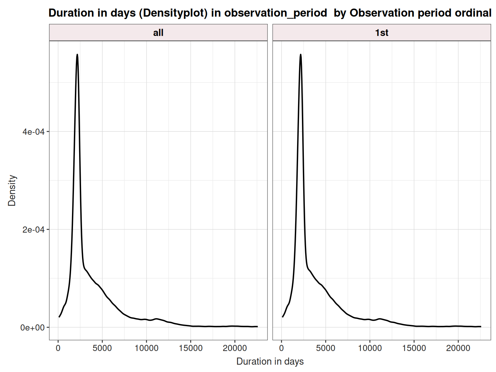
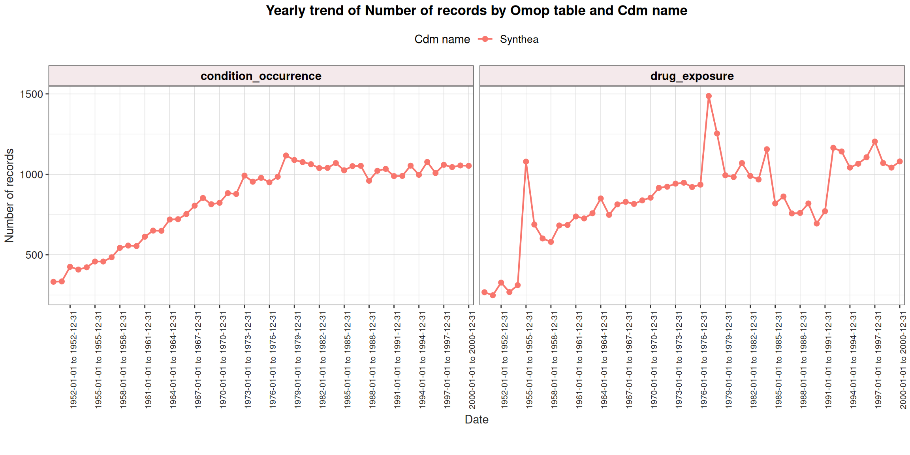

OmopSketch
Characterise databases
2026-05-12
Overview and motivation
- OmopSketch is designed to summarise key information of an OMOP-mapped database.
- Two main use cases:
- General characterisation — understand what’s in your database
- Feasibility assessment — is this database suitable for my study?
- Available on CRAN and GitHub.
Setup
Load packages and create the CDM object
- Load the required packages
- Create a CDM object from the delphi-100k synthetic dataset
[1] 0cdm <- cdmFromCon(
con = con,
cdmSchema = "main",
writeSchema = "results",
writePrefix = "os_"
)- The
cdmobject is your gateway to all OmopSketch functions — every function takescdmas its first argument.
1. Snapshot
What is a snapshot?
summariseOmopSnapshot() captures metadata about the CDM at a point in time — useful for reproducibility and maintaining clear records of changes.
Information provided:
-
Vocabulary version — from the
vocabularytable -
Table sizes — record counts for
personandobservation_period - Observation period span — earliest and latest dates in the data
- Source type — origin or type of the data source
summariseOmopSnapshot()
- Returns a summarised result object.
snapshot <- summariseOmopSnapshot(cdm = cdm)
glimpse(snapshot)Rows: 16
Columns: 13
$ result_id <int> 1, 1, 1, 1, 1, 1, 1, 1, 1, 1, 1, 1, 1, 1, 1, 1
$ cdm_name <chr> "Delphi-2M", "Delphi-2M", "Delphi-2M", "Delphi-2M", "Delphi-2M", "Delphi-2M", "Delphi-2M", "D…
$ group_name <chr> "overall", "overall", "overall", "overall", "overall", "overall", "overall", "overall", "over…
$ group_level <chr> "overall", "overall", "overall", "overall", "overall", "overall", "overall", "overall", "over…
$ strata_name <chr> "overall", "overall", "overall", "overall", "overall", "overall", "overall", "overall", "over…
$ strata_level <chr> "overall", "overall", "overall", "overall", "overall", "overall", "overall", "overall", "over…
$ variable_name <chr> "general", "general", "general", "cdm", "cdm", "cdm", "cdm", "cdm", "cdm", "observation_perio…
$ variable_level <chr> NA, NA, NA, NA, NA, NA, NA, NA, NA, NA, NA, NA, NA, NA, NA, NA
$ estimate_name <chr> "snapshot_date", "person_count", "vocabulary_version", "source_name", "version", "holder_name…
$ estimate_type <chr> "date", "integer", "character", "character", "character", "character", "character", "characte…
$ estimate_value <chr> "2026-05-12", "99523", "v5.0 27-AUG-25", "Delphi-2M Synthetic Health Trajectories", "5.4", "G…
$ additional_name <chr> "overall", "overall", "overall", "overall", "overall", "overall", "overall", "overall", "over…
$ additional_level <chr> "overall", "overall", "overall", "overall", "overall", "overall", "overall", "overall", "over…tableOmopSnapshot()
- Format the result into a gt table
tableOmopSnapshot(result = snapshot, type = "gt")| Estimate |
Database name
|
|---|---|
| Delphi-2M | |
| General | |
| Snapshot date | 2026-05-12 |
| Person count | 99,523 |
| Vocabulary version | v5.0 27-AUG-25 |
| Cdm | |
| Source name | Delphi-2M Synthetic Health Trajectories |
| Version | 5.4 |
| Holder name | Gerstung Lab (EMBL / DKFZ) |
| Release date | 2026-03-11 |
| Description | Synthetic patient health trajectories generated by Delphi-2M, a modified GPT-2 model trained on ~400K UK Biobank patient records. Transformed to OMOP CDM v5.4 by ETLDelphi using a 3-layer pattern (src -> stg -> cdm) in DuckDB. Source tables: enrollment, encounter, provider, death, problem, medication_orders, medication_fulfillment, current_medications, immunization, lab_orders, lab_results, vital_sign, allergy, therapy_orders, therapy_actions. Deterministic IDs; unmapped concepts = 0; reject/QC tables for observability. Citation: Shmatko A, Jung AW, Gaurav K, Brunak S, Mortensen LH, Birney E, Fitzgerald T, Gerstung M. Learning the natural history of human disease with generative transformers. Nature. 2025;647:248-256. doi:10.1038/s41586-025-09529-3 |
| Documentation reference | https://doi.org/10.1038/s41586-025-09529-3 |
| Observation period | |
| N | 99,523 |
| Start date | 1926-02-12 |
| End date | 2012-01-01 |
| Cdm source | |
| Type | duckdb |
| Package | CDMConnector |
| Write schema | results |
| Write prefix | os_ |
2. Observation period
What does the observation period tell us?
summariseObservationPeriod() summarises the observation_period table.
Information provided:
- Number of records per person — how many observation periods per individual
- Duration in days — length of each observation period
- Days to next observation period — gaps between consecutive periods
- Data quality (optional) — flags inconsistencies
- Missingness (optional) — counts of missing values per column
summariseObservationPeriod()
obs_result <- summariseObservationPeriod(cdm, missingData = TRUE, quality = TRUE)
glimpse(obs_result)Rows: 3,126
Columns: 13
$ result_id <int> 1, 1, 1, 1, 1, 1, 1, 1, 1, 1, 1, 1, 1, 1, 1, 1, 1, 1, 1, 1, 1, 1, 1, 1, 1, 1, 1, 1, 1, 1, 1, …
$ cdm_name <chr> "Delphi-2M", "Delphi-2M", "Delphi-2M", "Delphi-2M", "Delphi-2M", "Delphi-2M", "Delphi-2M", "D…
$ group_name <chr> "observation_period_ordinal", "observation_period_ordinal", "observation_period_ordinal", "ob…
$ group_level <chr> "all", "all", "all", "all", "all", "all", "all", "all", "all", "all", "all", "all", "all", "a…
$ strata_name <chr> "overall", "overall", "overall", "overall", "overall", "overall", "overall", "overall", "over…
$ strata_level <chr> "overall", "overall", "overall", "overall", "overall", "overall", "overall", "overall", "over…
$ variable_name <chr> "Records per person", "Records per person", "Records per person", "Records per person", "Reco…
$ variable_level <chr> NA, NA, NA, NA, NA, NA, NA, NA, NA, NA, NA, NA, NA, NA, NA, NA, NA, NA, NA, NA, NA, NA, NA, N…
$ estimate_name <chr> "mean", "sd", "min", "q05", "q25", "median", "q75", "q95", "max", "mean", "sd", "min", "q05",…
$ estimate_type <chr> "numeric", "numeric", "integer", "integer", "integer", "integer", "integer", "integer", "inte…
$ estimate_value <chr> "1", "0", "1", "1", "1", "1", "1", "1", "1", "4034.51619223697", "3606.78160684576", "1", "11…
$ additional_name <chr> "overall", "overall", "overall", "overall", "overall", "overall", "overall", "overall", "over…
$ additional_level <chr> "overall", "overall", "overall", "overall", "overall", "overall", "overall", "overall", "over…tableObservationPeriod()
tableObservationPeriod(result = obs_result, type = "gt")| Observation period ordinal | Variable name | Variable level | Estimate name |
CDM name
|
|---|---|---|---|---|
| Delphi-2M | ||||
| all | Number records | – | N | 99,523 |
| Number subjects | – | N | 99,523 | |
| Subjects not in person table | – | N (%) | 0 (0.00%) | |
| Records per person | – | Mean (SD) | 1.00 (0.00) | |
| Median [Q25 - Q75] | 1 [1 - 1] | |||
| Range [min to max] | [1 to 1] | |||
| Duration in days | – | Mean (SD) | 4,034.52 (3,606.78) | |
| Median [Q25 - Q75] | 2,492.00 [2,059.00 - 4,853.00] | |||
| Range [min to max] | [1.00 to 31,276.00] | |||
| Type concept id | Ehr billing record | N (%) | 99,523 (100.00%) | |
| Start date before birth date | – | N (%) | 0 (0.00%) | |
| End date before start date | – | N (%) | 0 (0.00%) | |
| Column name | Observation period end date | N missing data (%) | 0 (0.00%) | |
| Observation period id | N missing data (%) | 0 (0.00%) | ||
| N zeros (%) | 0 (0.00%) | |||
| Observation period start date | N missing data (%) | 0 (0.00%) | ||
| Period type concept id | N missing data (%) | 0 (0.00%) | ||
| N zeros (%) | 0 (0.00%) | |||
| Person id | N missing data (%) | 0 (0.00%) | ||
| N zeros (%) | 0 (0.00%) | |||
| 1st | Number subjects | – | N | 99,523 |
| Duration in days | – | Mean (SD) | 4,034.52 (3,606.78) | |
| Median [Q25 - Q75] | 2,492.00 [2,059.00 - 4,853.00] | |||
| Range [min to max] | [1.00 to 31,276.00] |
plotObservationPeriod() — Number of subjects
plotObservationPeriod(
result = obs_result,
plotType = "barplot",
variableName = "Number subjects"
)
plotObservationPeriod() — Duration in days
plotObservationPeriod(
result = obs_result,
plotType = "densityplot",
variableName = "Duration in days",
facet = "observation_period_ordinal"
)
3. Clinical tables
What does clinical table characterisation do?
summariseClinicalRecords() provides a comprehensive audit of any clinical table in the CDM.
Information provided:
-
General information
- Records & subjects — total counts
- Records per person — mean, SD, median, IQR, min, max
-
Concept summary (
conceptSummary = TRUE)- Domains / Concept type / Vocabularies / Standard concepts
-
Missingness (
missingData = TRUE) -
Quality checks (
quality = TRUE)- % records in observation period
- Records with end before start or start before birth date
summariseClinicalRecords()
clinical_result <- summariseClinicalRecords(
cdm = cdm,
omopTableName = "condition_occurrence",
conceptSummary = TRUE,
missingData = TRUE,
quality = TRUE
)- You can pass multiple tables at once:
omopTableName = c("condition_occurrence", "drug_exposure")
tableClinicalRecords()
tableClinicalRecords(result = clinical_result, type = "gt")| Variable name | Variable level | Estimate name |
Database name
|
|---|---|---|---|
| Delphi-2M | |||
| condition_occurrence | |||
| Number records | – | N | 39,306 |
| Number subjects | – | N (%) | 22,950 (100.00%) |
| Subjects not in person table | – | N (%) | 0 (0.00%) |
| Records per person | – | Mean (SD) | 1.71 (0.98) |
| Median [Q25 - Q75] | 1 [1 - 2] | ||
| Range [min to max] | [1 to 5] | ||
| In observation | Yes | N (%) | 39,306 (100.00%) |
| Domain | Condition | N (%) | 39,306 (100.00%) |
| Source vocabulary | Icd9cm | N (%) | 39,306 (100.00%) |
| Standard concept | Standard | N (%) | 39,306 (100.00%) |
| Type concept id | Ehr administration record | N (%) | 39,306 (100.00%) |
| Start date before birth date | – | N (%) | 0 (0.00%) |
| End date before start date | – | N (%) | 0 (0.00%) |
| Column name | Condition concept id | N missing data (%) | 0 (0.00%) |
| N zeros (%) | 0 (0.00%) | ||
| Condition end date | N missing data (%) | 39,306 (100.00%) | |
| Condition end datetime | N missing data (%) | 39,306 (100.00%) | |
| Condition occurrence id | N missing data (%) | 0 (0.00%) | |
| N zeros (%) | 0 (0.00%) | ||
| Condition source concept id | N missing data (%) | 0 (0.00%) | |
| N zeros (%) | 0 (0.00%) | ||
| Condition source value | N missing data (%) | 0 (0.00%) | |
| Condition start date | N missing data (%) | 0 (0.00%) | |
| Condition start datetime | N missing data (%) | 39,306 (100.00%) | |
| Condition status concept id | N missing data (%) | 39,306 (100.00%) | |
| N zeros (%) | 0 (0.00%) | ||
| Condition status source value | N missing data (%) | 39,306 (100.00%) | |
| Condition type concept id | N missing data (%) | 0 (0.00%) | |
| N zeros (%) | 0 (0.00%) | ||
| Person id | N missing data (%) | 0 (0.00%) | |
| N zeros (%) | 0 (0.00%) | ||
| Provider id | N missing data (%) | 39,306 (100.00%) | |
| N zeros (%) | 0 (0.00%) | ||
| Stop reason | N missing data (%) | 39,306 (100.00%) | |
| Visit detail id | N missing data (%) | 39,306 (100.00%) | |
| N zeros (%) | 0 (0.00%) | ||
| Visit occurrence id | N missing data (%) | 39,306 (100.00%) | |
| N zeros (%) | 0 (0.00%) | ||
✏️ Your turn: Clinical table audit
Task: Characterise both drug_exposure and procedure_occurrence in one call. Include missing data and quality checks.
Then answer:
- Which table has more records per person on average?
- What % of drug records are within the observation period?
💡 Click to see solution
result_ex <- summariseClinicalRecords(
cdm = cdm,
omopTableName = c("drug_exposure", "procedure_occurrence"),
missingData = TRUE,
quality = TRUE
)
tableClinicalRecords(result = result_ex, type = "gt")4. Trends over time
What do trends tell us?
-
summariseTrend()reveals how database content changes over time — essential for spotting data gaps, coverage periods, and temporal changes.
event vs episode
summariseTrend() has two separate arguments for tables — and the choice changes how records are counted across time intervals.
event — tables where occurrences happen at a single point in time
- Each record is assigned to the interval containing its start date only
- e.g. a diagnosis on 3 March 2015 → counts in 2015, nowhere else
- Typical tables:
condition_occurrence,drug_exposure,procedure_occurrence,measurement,observation,visit_occurrence,death
episode — tables that describe periods spanning over time
- Each record contributes to every interval between its start and end date
- e.g. an observation period from Jan 2015 to Dec 2016 → counts in both 2015 and 2016
- Typical tables:
observation_period,drug_era,condition_era
Outputs available
output argument |
What it counts |
|---|---|
"record" |
Number of records (default) |
"person" |
Number of distinct persons |
"person-days" |
Number of person-days (episode only) |
"sex" |
Number of females |
"age" |
Median age at start of period |
summariseTrend()
trend_result <- summariseTrend(
cdm = cdm,
event = c("condition_occurrence", "drug_exposure"),
interval = "years", # "years" | "quarters" | "months" | "overall"
output = "record", # "record" | "person" | "person-days" | "sex" | "age"
dateRange = as.Date(c("1950-01-01", "2000-12-31"))
)
glimpse(trend_result)Rows: 208
Columns: 13
$ result_id <int> 1, 1, 1, 1, 1, 1, 1, 1, 1, 1, 1, 1, 1, 1, 1, 1, 1, 1, 1, 1, 1, 1, 1, 1, 1, 1, 1, 1, 1, 1, 1, …
$ cdm_name <chr> "Delphi-2M", "Delphi-2M", "Delphi-2M", "Delphi-2M", "Delphi-2M", "Delphi-2M", "Delphi-2M", "D…
$ group_name <chr> "omop_table", "omop_table", "omop_table", "omop_table", "omop_table", "omop_table", "omop_tab…
$ group_level <chr> "condition_occurrence", "condition_occurrence", "drug_exposure", "drug_exposure", "condition_…
$ strata_name <chr> "overall", "overall", "overall", "overall", "overall", "overall", "overall", "overall", "over…
$ strata_level <chr> "overall", "overall", "overall", "overall", "overall", "overall", "overall", "overall", "over…
$ variable_name <chr> "Number of records", "Number of records", "Number of records", "Number of records", "Number o…
$ variable_level <chr> NA, NA, NA, NA, NA, NA, NA, NA, NA, NA, NA, NA, NA, NA, NA, NA, NA, NA, NA, NA, NA, NA, NA, N…
$ estimate_name <chr> "count", "percentage", "count", "percentage", "count", "percentage", "count", "percentage", "…
$ estimate_type <chr> "integer", "percentage", "integer", "percentage", "integer", "percentage", "integer", "percen…
$ estimate_value <chr> "86", "0.31", "4", "0.04", "68", "0.25", "5", "0.05", "87", "0.32", "8", "0.08", "76", "0.28"…
$ additional_name <chr> "time_interval", "time_interval", "time_interval", "time_interval", "time_interval", "time_in…
$ additional_level <chr> "1950-01-01 to 1950-12-31", "1950-01-01 to 1950-12-31", "1950-01-01 to 1950-12-31", "1950-01-…
summariseTrend() — check event/episode type
You can check how each table was treated in the result settings. The
typecolumn will show"event"or"episode"per table.
Rows: 1
Columns: 12
$ result_id <int> 1
$ result_type <chr> "summarise_trend"
$ package_name <chr> "OmopSketch"
$ package_version <chr> "1.0.1"
$ group <chr> "omop_table"
$ strata <chr> ""
$ additional <chr> "time_interval"
$ min_cell_count <chr> "0"
$ interval <chr> "years"
$ study_period_end <chr> "2000-12-31"
$ study_period_start <chr> "1950-01-01"
$ type <chr> "event"plotTrend()
plotTrend(result = trend_result, facet = "omop_table", colour = "cdm_name")
tableTrend()
tableTrend(result = trend_result, type = "reactable")✏️ Your turn: Sex-stratified trends
Task: Create a plot showing the yearly trend in records for drug_exposure and condition_occurrence, stratified by sex, for the date range 1990–2010.
Hints:
-
output = "record"gives you record counts -
sex = TRUEgives you sex-stratified summaries dateRange = as.Date(c("1990-01-01", "2010-12-31"))- Use
facet = "omop_table"andcolour = "sex"in the plot
💡 Click to see solution
result_sex <- summariseTrend(
cdm = cdm,
event = c("drug_exposure", "condition_occurrence"),
interval = "years",
output = "record",
sex = TRUE,
dateRange = as.Date(c("1990-01-01", "2010-12-31"))
)
plotTrend(result = result_sex, facet = "omop_table", colour = "sex")5. Concept counts
summariseConceptIdCounts()
- Counts how often each concept ID appears — useful for feasibility (do we have enough patients with condition X?).
concept_result <- summariseConceptIdCounts(
cdm = cdm,
omopTableName = "procedure_occurrence",
countBy = c("record", "person")
)
glimpse(concept_result)Rows: 690
Columns: 13
$ result_id <int> 1, 1, 1, 1, 1, 1, 1, 1, 1, 1, 1, 1, 1, 1, 1, 1, 1, 1, 1, 1, 1, 1, 1, 1, 1, 1, 1, 1, 1, 1, 1, …
$ cdm_name <chr> "Delphi-2M", "Delphi-2M", "Delphi-2M", "Delphi-2M", "Delphi-2M", "Delphi-2M", "Delphi-2M", "D…
$ group_name <chr> "omop_table", "omop_table", "omop_table", "omop_table", "omop_table", "omop_table", "omop_tab…
$ group_level <chr> "procedure_occurrence", "procedure_occurrence", "procedure_occurrence", "procedure_occurrence…
$ strata_name <chr> "overall", "overall", "overall", "overall", "overall", "overall", "overall", "overall", "over…
$ strata_level <chr> "overall", "overall", "overall", "overall", "overall", "overall", "overall", "overall", "over…
$ variable_name <chr> "CT of chest", "CT of chest", "Dilation of esophagus", "Dilation of esophagus", "Insertion of…
$ variable_level <chr> "4058335", "4058335", "4112340", "4112340", "44789455", "44789455", "4049372", "4049372", "40…
$ estimate_name <chr> "count_records", "count_subjects", "count_records", "count_subjects", "count_records", "count…
$ estimate_type <chr> "integer", "integer", "integer", "integer", "integer", "integer", "integer", "integer", "inte…
$ estimate_value <chr> "1938", "1642", "402", "169", "354", "136", "1742", "720", "146", "71", "2", "1", "898", "389…
$ additional_name <chr> "source_concept_id &&& source_concept_name", "source_concept_id &&& source_concept_name", "so…
$ additional_level <chr> "0 &&& No matching concept", "0 &&& No matching concept", "0 &&& No matching concept", "0 &&&…tableConceptIdCounts()
- Filter using the
displayargument:
display |
What is shown |
|---|---|
"overall" (default) |
All records |
"standard" |
Standard concepts only |
"source" |
Source codes only |
"missing standard" |
Source codes with no standard mapping |
"missing source" |
Standard concepts with no source code |
tableConceptIdCounts()
tableConceptIdCounts(result = concept_result, display = "standard", type = "reactable")tableTopConceptCounts()
tableTopConceptCounts(result = concept_result, countBy = "record", top = 10, type = "gt")| Top |
Cdm name
|
|---|---|
| Delphi-2M | |
| procedure_occurrence | |
| 1 | Standard: Interview and evaluation, described as limited (2006977) Source: No matching concept (0) 522230 |
| 2 | Standard: Molecular genetics procedure (4019097) Source: No matching concept (0) 99523 |
| 3 | Standard: Interview and evaluation, described as brief (2006976) Source: No matching concept (0) 70393 |
| 4 | Standard: Comprehensive interview and evaluation (4063814) Source: No matching concept (0) 50248 |
| 5 | Standard: Diagnostic interview and evaluation, not otherwise specified (2006980) Source: No matching concept (0) 30226 |
| 6 | Standard: MG Breast - bilateral Views (3052425) Source: No matching concept (0) 9826 |
| 7 | Standard: US Pelvis transvaginal (3018554) Source: No matching concept (0) 9596 |
| 8 | Standard: Other transplant of liver (2003166) Source: No matching concept (0) 6758 |
| 9 | Standard: XR Chest Views (3010713) Source: No matching concept (0) 6342 |
| 10 | Standard: Other oxygen enrichment (2007685) Source: No matching concept (0) 3935 |
6. Full database characterisation
databaseCharacteristics()
-
databaseCharacteristics()runs all summaries in one call.
shinyCharacteristics()
- Then launch a Shiny app to explore everything interactively:
shinyCharacteristics(result = full_result, directory = here())Live Shiny demo
Thank you!
Resources
👉 Package website
👉 CRAN
👉 PDF manual
📧 cecilia.campanile@ndorms.ox.ac.uk